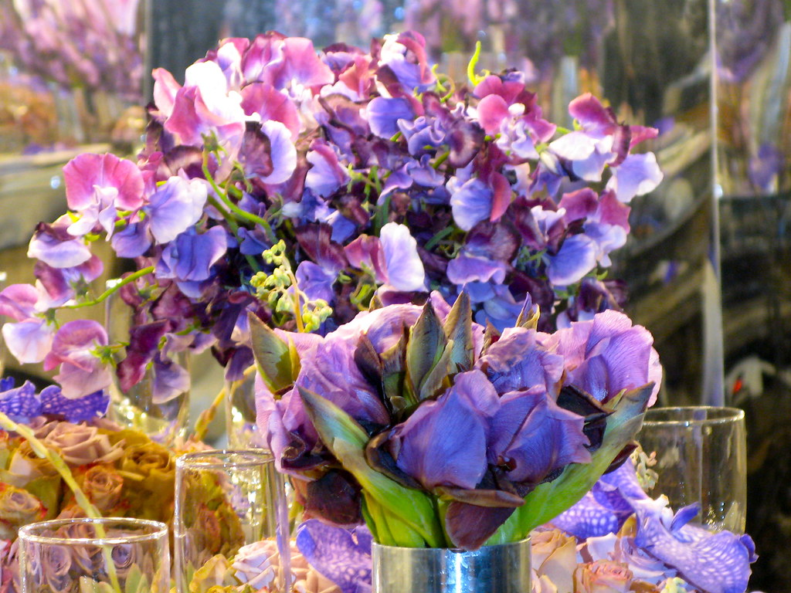

【2026年】夫婦 結婚記念日 アニバーサリー プレゼントに喜ばれるプレゼント5選｜夫婦別おすすめ

結婚記念日は夫婦の愛を再確認する特別な日です。夫婦の気持ちに寄り添うプレゼントを選ぶことで、より深い愛情を育むことができます。
この記事では、夫婦の結婚記念日プレゼントに喜ばれるアイテムを5つ紹介します。各アイテムの特徴と魅力について説明します。
選び方のポイント
結婚記念日プレゼントを選ぶ際には、夫婦の趣味や好みを考慮することが大切です。例えば、夫婦が旅行好きであれば、旅行券や旅行関連グッズが喜ばれるかもしれません。
また、夫婦の結婚記念日は愛を再確認する日であるため、ロマンチックなプレゼントも喜ばれるでしょう。

1. 名入れタンブラー(サーモス・スタンレー)
¥3,000〜¥8,000
夫婦の名前を入れたタンブラーは、ロマンチックなプレゼントとして喜ばれるでしょう。夫婦が愛を再確認する日に、愛の証として贈ることができます。

2. カップルウォッチ(シチズン)
¥10,000〜¥20,000
夫婦が同時に時計を見て愛を再確認することができます。ロマンチックなプレゼントとして喜ばれるでしょう。
3. ワインギフトセット(ニコラス・フェリュー)
¥5,000〜¥10,000
夫婦がワインを楽しむことができます。ロマンチックなプレゼントとして喜ばれるでしょう。
4. レザーワレット(グッチ)
¥10,000〜¥20,000
夫婦が使える実用的プレゼントとして喜ばれるでしょう。レザーの財布は丈夫で長持ちするため、夫婦の愛を長く保つことができます。

5. 旅行券(日本旅行)
¥20,000〜¥50,000
夫婦が旅行を楽しむことができます。ロマンチックなプレゼントとして喜ばれるでしょう。
プレゼントのアイデア
プレゼントのアイデアとしては、夫婦の写真を飾るフレームや、記念日メッセージが入ったカードが喜ばれるかもしれません。
さらに、夫婦の好みに合ったワインやチョコレートなどのギフトセットも喜ばれるでしょう。
実用的プレゼント
実用的プレゼントとしては、夫婦が使える日用品や家電製品が喜ばれるかもしれません。
例えば、夫婦が料理好きであれば、料理関連グッズや家電製品が喜ばれるでしょう。
プレゼントの選び方のコツ
プレゼントを選ぶ際には、夫婦の気持ちに寄り添うことが大切です。
夫婦の好みや趣味を考慮することで、喜ばれるプレゼントを選ぶことができます。
Okuriteでは、贈る相手やシーンに合わせて
ぴったりのギフトを簡単に探せます。
まとめ
結婚記念日は夫婦の愛を再確認する特別な日です。夫婦の気持ちに寄り添うプレゼントを選ぶことで、より深い愛情を育むことができます。
夫婦の結婚記念日プレゼントに喜ばれるアイテムを5つ紹介しました。各アイテムの特徴と魅力について説明しました。夫婦の好みや趣味を考慮することで、喜ばれるプレゼントを選ぶことができます。